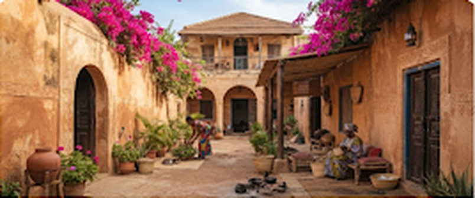

Nouveau mot
kër
[kër] · nom
maison
demeure, foyer, concession familiale
Classe g
Pluriel : kër yi
Très courant
Au Sénégal, kër désigne bien plus qu'un bâtiment : c'est le foyer, l'espace où résonne la Teranga.